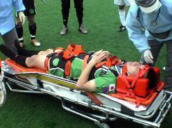

|
Hachioji Park, Saturday 27th May. Despite what the conspiracy theorists may hypothesise it is pace, skill and agility that has seen the Hibs have the wood of Sala in recent years. The Hibs front 2, wide midfielders and attacking midfielders are not afraid to pour forward in numbers and Sala’s big men at the back seem to have trouble keeping up. The same big men are so effective against the larger more bullocking style forwards. The Hibs 2005/6 style of attacking football has seen us average just under 4 goals a game and has been great fun to be involved with. Most teams in the league will have seen the Hibs ‘click’ and score 4 or 5 goals in a 10 - 20 minute period when we are very difficult to defend against.
OK – this is the last one “Toot Toot” – that’s enough blowing our own trumpet!
After the first round result we were expecting Sala to be well up for this match as their chance for revenge. They seemed to be well prepared as they had their top squad available, welcoming the return of their captain and centre back Guido, who missed the first round match through injury. Game on.
The Hibs began with an onslaught and it was no surprise to go ahead after the midfield opened up the Sala defense, putting Tomo one on one with Sid. Tomo rounded the keeper only to find himself at the bye line, so he cut it back for Yohei to drill home from close range under no pressure. It was then good to see Tomo bag his first goal in some months; this was thoroughly deserved as he had a hand in almost all our goals and confirmed his return to top form. Bevan and Yasu also scored before half time to make the score 4-0 at half time and both sides were wondering if a double figure score was going to be a possibility again. Did somebody say ground-hog day?
2 minutes into the second half and Keita ended up on the back of Brian G and somehow fell from this height with his upper back into the turf. He was unable to lift his head and had to be taken to hospital in a neck brace by ambulance. There was no report of fracture but it appears he has suffered an injury similar to a severe whiplash, and he has been laid up in bed ever since. We all wish him a speedy recovery. After the long stoppage the intensity of the game dipped somewhat and we were on the back foot for periods as Dhugal and Shigeru began to create chances. The highlight of the second half was a spectacular save from Hitoshi that left everyone shaking their heads in disbelief. A great shot from Dhugal? Flew over his head and the ball was all but over him, but he somehow threw himself up and back and knocked it upwards just enough for the ball to hit the bar. Despite being flat on the ground after the save, he sprang back up in time to catch it at chest height on its way down from the bar. Ike almost got his first TML goal of the season but the Sala defender (Brian G) stuck it into the net for him before he had a chance to. Kuni K got on the score line to make it 6 -0 which is where it stayed until the finish.
Well that’s it for the Hibs 2005/6 season. Thanks very much to Sid and Paco who have once again done a fantastic job organizing the league for little reward. We’re already looking forward to trying to defend our title in the 2006/7 season. See you then.
Reporter: Bevan Colless.
|